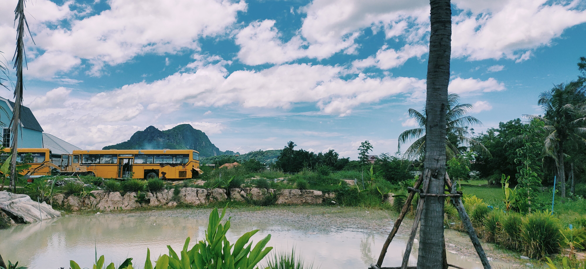

Life Memory
Life Memory

ภาพถ่าย : ชีวิตชนบท
ภาพนี้ถ่าย ณ จังหวัดเพชรบุรี เปรียบเสมือนภาพแรกที่เรามองเห็นในทุกเช้า หรือก่อนนอน เป็นบั้นปลายชีวิต
ที่ใครๆ หลายคนมองเห็นเช่นเดียวกัน การได้ตื่นนอนและหลับไหลท่ามกลางธรรมชาติ ในองค์ประกอบภาพ
สิ่งต่างๆ นั้นเปรียบดั่งผลตอบแทนของน้ำพักน้ำแรงของตน จากจุดเริ่มต้นสู่จุดหมายปลายทาง